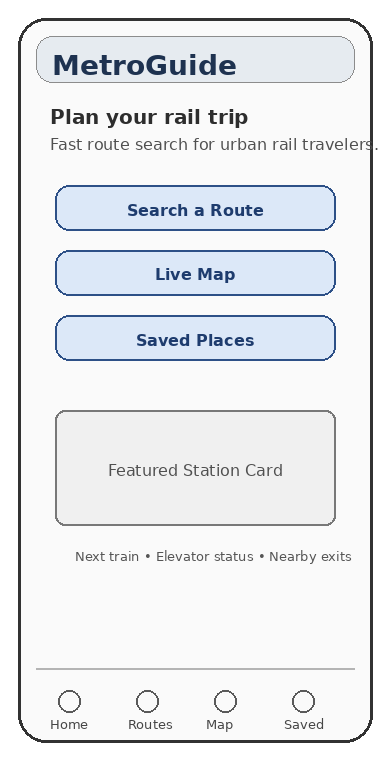
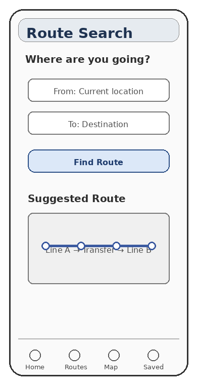
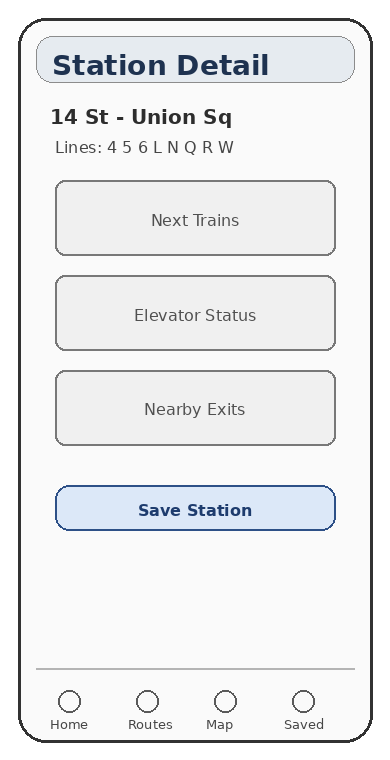
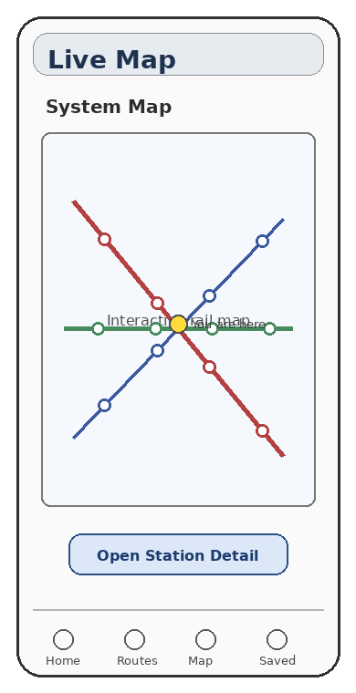
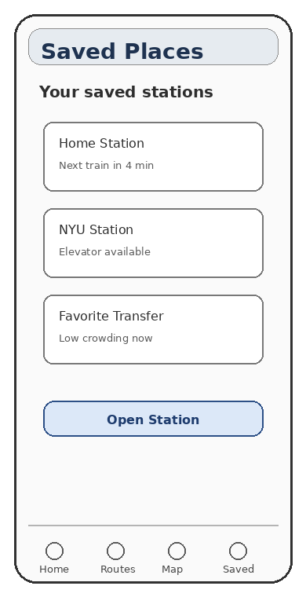
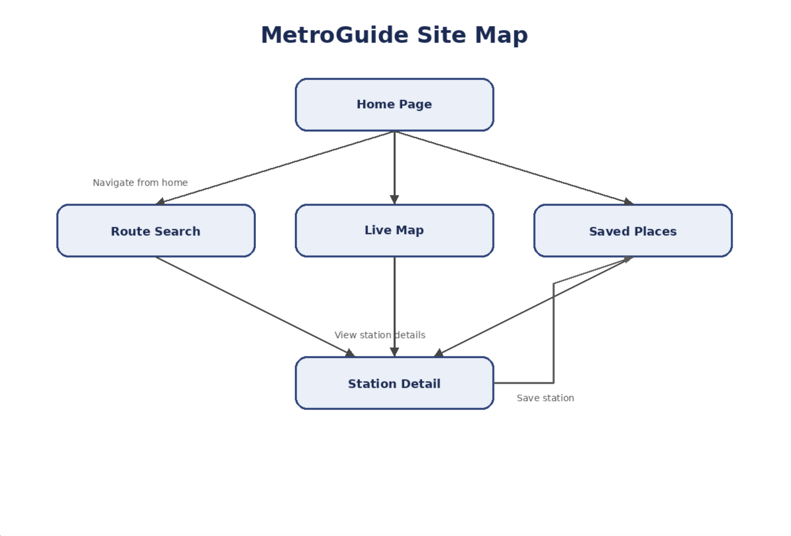

This page presents the user experience design plan for a mobile website called MetroGuide. MetroGuide is designed to help commuters search for routes, view station information, use a live map, and save important stations, etc.
Clickable Prototype
The clickable prototype shows how a user can move through the main screens of the MetroGuide mobile website.
Wireframes
These mobile wireframes show the main page layouts for the imagined MetroGuide website.
Home Page

Route Search Page

Station Detail Page

Live Map Page

Saved Places Page

Site Map
The site map shows the structure of the MetroGuide site.
